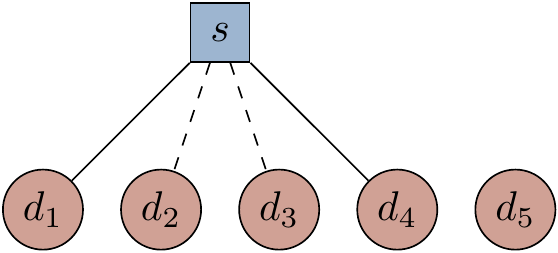
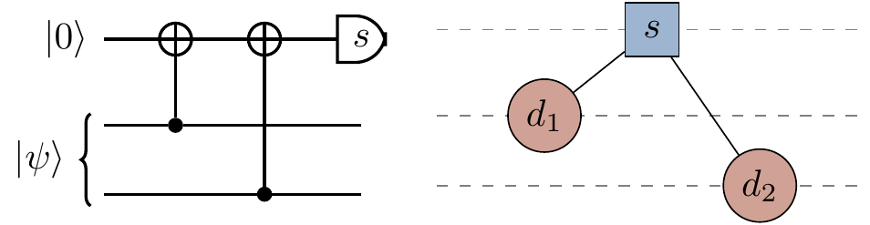
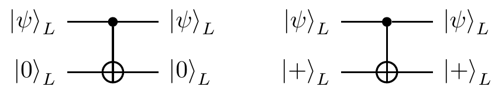

14.11 Remarks and exercises
14.11.1 Error correcting conditions for the three-qubit code
When building the Shor
Consider the stabiliser code given by
Figure 14.13: All computational errors of weight at most
But now let’s look at
Figure 14.14: Different types of computational errors of weight at most
14.11.2 The smallest d=3 code, full stop
We have already seen the Shor
![The Tanner graph for the [[5,1,3]] stabiliser code. Solid lines represent X-checks, and dashed ones Z-checks.](qubit_guide_files/figure-html/unnamed-chunk-130-1.png)
Figure 14.15: The Tanner graph for the
This
The counting argument above tells us that the smallest code must have at least five qubits, but doesn’t tell us if we can actually make one with exactly five qubits! How do we actually go about finding optimal codes then? The answer is simply that we do not know — there is no universal prescription for designing optimal quantum codes. But we do know quite a few things about designing good quantum codes.
One last thing to mention is how this code displays that quantum codes can be used for more than just error correction.
The
14.11.3 Hamming code encodings and decodings
- How is the binary message
0101 encoded in the Hamming[7,4,3] code? - If we receive the string
1011011 from Alice, who encoded her message in the Hamming[7,4,3] code, then what is the error syndrome? What correction should we make? What is the decoded message?
14.11.4 Generator and parity-check matrices
Show that, if the
14.11.5 A big parity check matrix
Consider the following parity-check matrix of a classical
What are the values of the parameters
n andk ?If we receive the bit string
x = 00101001011011000110101 and assume that no more than three errors have occurred, what are the locations of the errors?Show that we could use two copies of this code to build a CSS code.
If we build a CSS code using this classical code, what parameters does it have? That is, what is its specification as an
[[n,k,d]] code?Given a state
|\psi\rangle of 23 qubits, how would you measure the value of the first stabiliserX_1X_4X_5X_6X_{10}X_{11}X_{12}X_{13}? If we were to write out
|0\rangle_L for the CSS code, how many different basis states would be in the superposition?
14.11.6 Using Tanner graphs
Consider the Tanner graph below.

Recall that we use solid lines to denote
- What stabiliser does this Tanner graph define?
- Add to the Tanner graph the definition for a second stabiliser
g_2=\mathbf{1}XZZX . How can we visually confirm that the two stabilisers commute?
At the end of Section 14.1, in Figure 14.3, we claimed an equivalence between Tanner graphs (for detecting the parity of

- Draw the circuit323 for measuring the parity of
Z -errors. - Draw the Tanner graph for the Shor
[[9,1,3]] code.
14.11.7 Five-qubit repetition code
Consider the five-qubit repetition code
- What are the stabilisers of this code?
- What is the normaliser of this code?
- Which of the following sets of errors satisfy the error correcting conditions for this code? (Recall that the identity
\mathbf{1} is always implicitly assumed to be inside the set of errors).\{X_1, Z_5\} \{X_1, X_2, X_3, X_4\} \{Z_1, Z_2, Z_3, Z_4\} \{Z_1Z_2, Z_2Z_4, Z_1Z_4\}
14.11.8 An error in the Steane [[7,1,3]] code
One logical qubit is encoded in seven physical qubits using the Steane
- What is the resulting error syndrome?
- What is the smallest-weight error with the same error syndrome as
E ? - If we apply the smallest-weight error from above as our correction, then what is the net logical error on the encoded qubit?
14.11.9 Non-degenerate codes
An
Prove that all the stabilisers for a non-degenerate code have weight
14.11.10 The smallest d=3 CSS code
The
If we construct a CSS code using two parity-check matrices
H_1 andH_2 , withm_1 andm_2 rows (respectively), and we want our code to encode one logical qubit inton physical qubits, then how are the numbersm_1 ,m_2 , andn related?Explain why the columns of a non-degenerate
d=3 code must be distinct. Hence conclude that2^{m_i}\geqslant n+1 fori=1,2 .Conclude that the smallest possible non-degenerate CSS code with
d=3 hasn=7 qubits.
14.11.11 CSS codes from a single matrix
Let
Show that
14.11.12 Error-correcting conditions, algebraically
Let
14.11.13 Steane error correction: towards fault tolerance
We have seen how we can measure the stabilisers of a stabiliser code by using a Hadamard test, resulting in
Note that, while we are motivated by the possibility of there being faults during the error correction, for now we will still assume that the error-correction process proceeds perfectly, and we are only trying to identify and fix errors on the incoming (logical) state
As we shall later see, CSS codes all have transversal

- Verify that the above circuits do indeed have the claimed outputs.
This means that, if the qubits are in the logical space (i.e. have undergone no errors), then the action of the circuit is trivial.
So what happens if there’s an error?
Let’s assume that we’re working with an
- If an
X orZ error has already affected the input logical state|\psi\rangle_L on a specific physical qubit (say, thei -th) in the circuit on the left above, what are the possible errors on the final state? - If an
X orZ error has already affected the input logical state|\psi\rangle_L on a specific physical qubit (say, thei -th) in the circuit on the right above, what are the possible errors on the final state?
In other words, we see that single errors cannot propagate to more than one error on each logical qubit. This will prove to be very useful when thinking about fault tolerance, as the same is also true if errors occur during the circuit. Now we should see how error correction works. Let’s consider the circuit on the left above.
- The
X stabilisers are defined by the rows of a parity-check matrixH . We measure each physical qubit of the second logical qubit,|0\rangle_L , in theX basis at the end of the circuit. In the absence of any errors, we get a measurement outcomey\in\{0,1\}^n . What is the value ofH\cdot y ? - If a weight-
w Z -error occurs on the state|\psi\rangle_L before the (transversal) controlled-\texttt{NOT} , where2w<d , then what are the possible measurement outcomes? How do we identify which corrections to make?
So this circuit allows us to correct
- Show that the circuit on the right above enables the correction of
X -errors in a similar way, where the extra logical qubit is now measured by measuring each individual qubit in theZ (i.e. computational) basis.
Note that this code is not a CSS code! To prove this, we could use theorems about transversal gates. The smallest CSS code with
d=3 is described in Exercise 14.11.10.↩︎Here we are tacitly assuming that the code is non-degenerate (see Exercise 14.11.9).↩︎
Hint: you know what the circuit for
X -parity checks looks like, so do the standard thing and swap everyX forZ (and vice versa), transform anything in theZ -basis to theX -basis (and vice versa), and then check if the resulting circuit can be simplified by cancelling out any gates; don’t forget that a\texttt{c-NOT} is secretly a\texttt{c-}X !↩︎We are assuming the availability of the logical states
|0\rangle_L and|+\rangle_L , but state preparation is another challenge that we will eventually have to deal with!↩︎